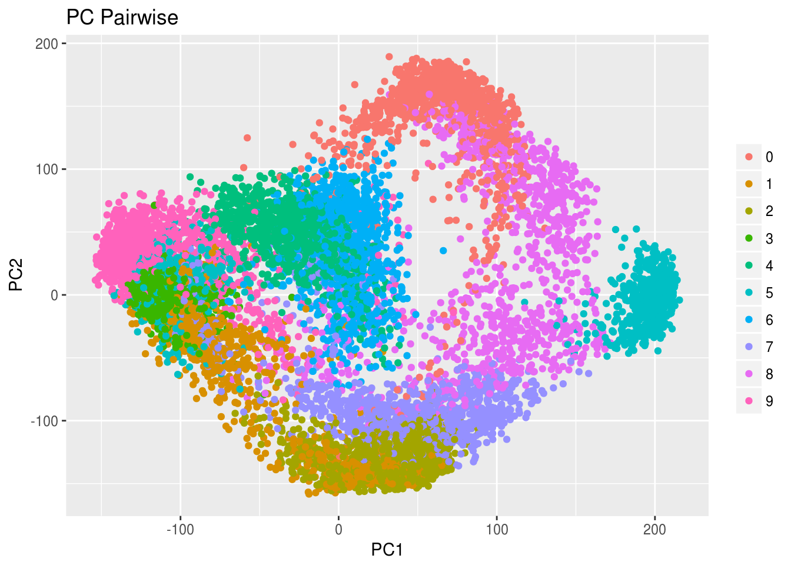
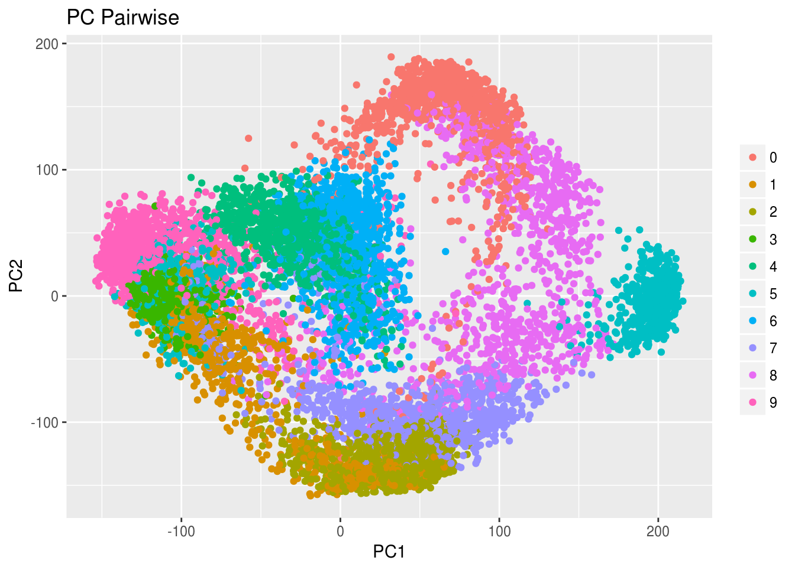

rrr for Multivariate Analysis
Chris Addy
2016-11-08
devtools::install_github("chrisaddy/rrr")
library(rrr)library(dplyr)\[ X_1 + Y = 2 \]
Reduced-Rank Regression and Its Special Cases
The multivariate linear regression model
library(MMST)
library(gridExtra)\[ \overset{s \times 1}{\mathbf{Y}} = \overset{s \times 1}{\boldsymbol{\mu}} + \overset{s \times r}{\mathbf{C}} \overset{r \times 1}{\mathbf{X}} + \overset{s \times 1}{\varepsilon} \]
Principal Components Analysis
Set
\[latex \begin{aligned*} \mathbf{Y} & \equiv \mathbf{X} \\ s & = r \\ \mathbf{\Gamma} & = \mathbf{I}_r \\ \end{aligned*} \]
Then, the least-squares error criterion
\[\begin{equation} \begin{aligned} \mathrm{E}\left[\left(\mathbf{X} - \boldsymbol{\mu} - \mathbf{A}\mathbf{B}\mathbf{X}\right)^\tau\left(\mathbf{X} - \boldsymbol{\mu} - \mathbf{A}\mathbf{B}\mathbf{X}\right)\right] \end{aligned} \end{equation}\]is minimized by the reduced-rank regression solution,
\[\begin{equation} \begin{aligned} \mathbf{A}^{\left(t\right)} & = \left(\mathbf{v}_1, \dots, \mathbf{v}_t\right) \\ \mathbf{B}^{\left(t\right)} & = \mathbf{A}^{\left(t\right) \tau} \\ \boldsymbol{\mu}^{\left(t\right)} & = \left(\mathbf{I}_r - \mathbf{A}^{\left(t\right)}\mathbf{B}^{\left(t\right)}\right)\boldsymbol{\mu}_X \\ \end{aligned} \end{equation}\]where \(\mathbf{v}_j = \mathbf{v}_j \left(\mathbf{\Sigma}_{XX}\right)\) is eigenvector associated with the \(j\)th largest eigenvalue of \(\mathbf{\Sigma}_{XX}.\)
The best reduced-rank approximation to the original \(\mathbf{X}\) is
\[\begin{equation} \begin{aligned} \hat{\mathbf{X}}^{\left(t\right)} & = \boldsymbol{\mu}^{\left(t\right)} + \mathbf{A}^{\left(t\right)}\mathbf{B}^{\left(t\right)} \mathbf{X} \end{aligned} \end{equation}\]data(pendigits)
digits <- as_data_frame(pendigits)
digits_class <- digits %>% select(V35)
digits_features <- digits %>% select(-V35, -V36)
#pca_rank_trace(digits_features)
#pca_rank_trace_plot(digits_features)
#pc_pairwise_plot(digits_features, class_labels = digits_class)
#pc_plot_3D(digits_features, class_labels = digits_class)Canonical Variate Analysis
\(\mathbf{X}, \mathbf{Y}\) are jointly distributed, with
\[\begin{equation} \begin{aligned} \mathrm{E}\left\{ \begin{pmatrix} \mathbf{X} \\ \mathbf{Y} \\ \end{pmatrix} \right\} = \begin{pmatrix} \boldsymbol{\mu}_X \\ \boldsymbol{\mu}_Y \\ \end{pmatrix}, \quad \mathrm{cov}\left\{ \begin{pmatrix} \mathbf{X} \\ \mathbf{Y} \\ \end{pmatrix}\right\} = \begin{pmatrix} \mathbf{\Sigma}_{XX} & \mathbf{\Sigma}_{XY} \\ \mathbf{\Sigma}_{YX} & \mathbf{\Sigma}_{YY} \\ \end{pmatrix} \end{aligned} \end{equation}\]Let \(1 \leq t \leq \mathrm{min}\left(r, s\right)\). \(\mathbf{X}\) and \(\mathbf{Y}\) are linearly projected into new vector variates,
\[\begin{equation} \begin{aligned} \boldsymbol{\xi}_{t \times 1} = \mathbf{G}_{t \times r} \mathbf{X}_{r \times 1}, \quad \boldsymbol{\omega}_{t \times 1} = \mathbf{H}_{t \times s} \mathbf{X}_{s \times 1} \end{aligned} \end{equation}\]Finding a solution to the problem
\[\begin{equation} \begin{aligned} \boldsymbol{\xi} \approx \boldsymbol{\nu} + \boldsymbol{\omega} \end{aligned} \end{equation}\]requires minimizing the least-squares criterion
\[\begin{equation} \begin{aligned} \mathrm{E}\left[\left(\mathbf{H}\mathbf{Y} - \boldsymbol{\nu} - \mathbf{G}\mathbf{X}\right)\left(\mathbf{H}\mathbf{Y} - \boldsymbol{\nu} - \mathbf{G}\mathbf{X}\right)^\tau\right] \end{aligned}, where we assume $\mathrm{cov}\left(\boldsymbol{\omega}\right) = \mathbf{I}_t$. \end{equation}\]. This least-squares criterion is minimized when
\[\begin{equation} \begin{aligned} \boldsymbol{\nu}^{\left(t\right)} & = \mathbf{H}^{\left(t\right)} \boldsymbol{\mu}_Y - \mathbf{G}^{\left(t\right)}\boldsymbol{\mu}_Y \\ \mathbf{G}^{\left(t\right)} & = \begin{pmatrix} \mathbf{v}_1^\tau \\ \vdots \\ \mathbf{v}_t^\tau \\ \end{pmatrix} \mathbf{\Sigma}_{YY}^{-1/2} \mathbf{\Sigma}_{YX}\mathbf{\Sigma}_{XX}^{-1} \\ \mathbf{H}^{\left(t\right)} & = \begin{pmatrix} \mathbf{v}_1^\tau \\ \vdots \\ \mathbf{v}_t^\tau \\ \end{pmatrix} \mathbf{\Sigma}_{YY}^{-1/2} \\ \end{aligned} \end{equation}\]where \(\mathbf{v}_j\) is the eigenvector associated with the \(j\)th largest eigenvalue of
\[\begin{equation} \begin{aligned} \mathbf{R} & = \mathbf{\Sigma}_{YY}^{-1/2}\mathbf{\Sigma}_{YX} \mathbf{\Sigma}_{XX}^{-1} \mathbf{\Sigma}_{XY} \mathbf{\Sigma}_{YY}^{-1/2} \end{aligned} \end{equation}\]### COMBO-17 galaxy data
data(COMBO17)
galaxy <- as_data_frame(COMBO17) %>%
select(-starts_with("e."), -Nr, -UFS:-IFD) %>%
na.omit()
galaxy_x <- galaxy %>% select(-Rmag:-chi2red)
galaxy_y <- galaxy %>% select(Rmag:chi2red)
#galaxy_x
#galaxy_yLinear Discriminant Analysis
Vignettes are long form documentation commonly included in packages. Because they are part of the distribution of the package, they need to be as compact as possible. The html_vignette output type provides a custom style sheet (and tweaks some options) to ensure that the resulting html is as small as possible. The html_vignette format:
- Never uses retina figures
- Has a smaller default figure size
- Uses a custom CSS stylesheet instead of the default Twitter Bootstrap style
Vignette Info
Note the various macros within the vignette section of the metadata block above. These are required in order to instruct R how to build the vignette. Note that you should change the title field and the \VignetteIndexEntry to match the title of your vignette.
Styles
The html_vignette template includes a basic CSS theme. To override this theme you can specify your own CSS in the document metadata as follows:
output:
rmarkdown::html_vignette:
css: mystyles.cssFigures
The figure sizes have been customised so that you can easily put two images side-by-side.
plot(1:10)
plot(10:1) 

You can enable figure captions by fig_caption: yes in YAML:
output:
rmarkdown::html_vignette:
fig_caption: yesThen you can use the chunk option fig.cap = "Your figure caption." in knitr.
More Examples
You can write math expressions, e.g. \(Y = X\beta + \epsilon\), footnotes1, and tables, e.g. using knitr::kable().
| mpg | cyl | disp | hp | drat | wt | qsec | vs | am | gear | carb | |
|---|---|---|---|---|---|---|---|---|---|---|---|
| Mazda RX4 | 21.0 | 6 | 160.0 | 110 | 3.90 | 2.620 | 16.46 | 0 | 1 | 4 | 4 |
| Mazda RX4 Wag | 21.0 | 6 | 160.0 | 110 | 3.90 | 2.875 | 17.02 | 0 | 1 | 4 | 4 |
| Datsun 710 | 22.8 | 4 | 108.0 | 93 | 3.85 | 2.320 | 18.61 | 1 | 1 | 4 | 1 |
| Hornet 4 Drive | 21.4 | 6 | 258.0 | 110 | 3.08 | 3.215 | 19.44 | 1 | 0 | 3 | 1 |
| Hornet Sportabout | 18.7 | 8 | 360.0 | 175 | 3.15 | 3.440 | 17.02 | 0 | 0 | 3 | 2 |
| Valiant | 18.1 | 6 | 225.0 | 105 | 2.76 | 3.460 | 20.22 | 1 | 0 | 3 | 1 |
| Duster 360 | 14.3 | 8 | 360.0 | 245 | 3.21 | 3.570 | 15.84 | 0 | 0 | 3 | 4 |
| Merc 240D | 24.4 | 4 | 146.7 | 62 | 3.69 | 3.190 | 20.00 | 1 | 0 | 4 | 2 |
| Merc 230 | 22.8 | 4 | 140.8 | 95 | 3.92 | 3.150 | 22.90 | 1 | 0 | 4 | 2 |
| Merc 280 | 19.2 | 6 | 167.6 | 123 | 3.92 | 3.440 | 18.30 | 1 | 0 | 4 | 4 |
Also a quote using >:
“He who gives up [code] safety for [code] speed deserves neither.” (via)
A footnote here.↩